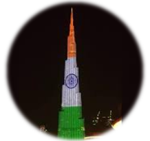

|  | Vishal DasEngineering Graduate at IIT BHU On 27th November 2020, after qualifying the 7th most toughest exam of the World i.e Jee Advanced, I landed into one of the prestigious institute of the world The IIT B.H.U . The top ranked engineering college in India and around 101 years old with huge alumuni network and greatest resources, it was my dream destination. |
| Places Visited | Experience |
|---|---|
| Kolkata | Very nice place. Only place where you can expect all sorts of things. |
| Varanasi | Second Home indeed. Since place where my college live it is most fascinating place for me. |
| Web Development | 💎💎💎 | Photography | 💎💎 |
| Programming | 💎💎 | Marketing | 💎💎 |